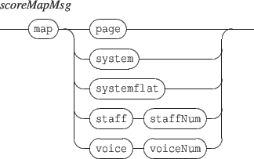

Next: 11.2 Score browsing and
Up: 11. Score specific messages
Previous: 11. Score specific messages
Contents
Index
11.1 Specific score mappings
Music score mappings are automatically computed by the system. However, since a score may support a large number of mappings (staff based, system based, voice based, etc.), music scores supports a specific map message to request the computation of a specific mapping. This message has the form:

The Guido map name must be concatenated as a string (as a usual map name).
- page: a page level mapping
- system: a system level mapping
- systemflat: a system level mapping without system subdivision (one graphic segment per system)
- staff: a staff level mapping: the staff indicated by the next parameter (between 1 and the score staves count).
- voice: a voice level mapping: the voice indicated by the next parameter (between 1 and the score voices count).
The default synchronization mode for a Guido score is staff1.
Note that a voice may be distributed on several staves and thus a staff may contain serveral voices.
Next: 11.2 Score browsing and
Up: 11. Score specific messages
Previous: 11. Score specific messages
Contents
Index
Grame - Interlude project [ANR-08-CORD-010]